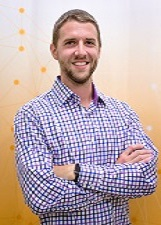
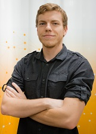
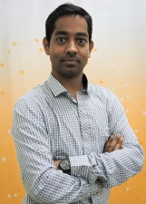
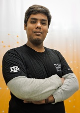
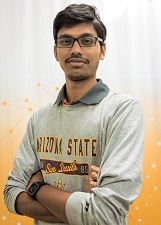
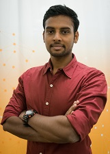
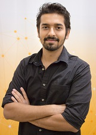
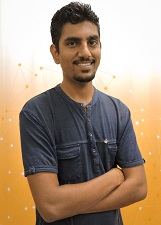
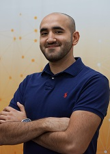

Umesh Prasad
Levitation




Kanniappan Krishnarajakumar
Dynamics










Ashwin Krishnamurthy
Thermal
Joshua Bowen
Thermal
Perek Dongaonkar
Modeling & Simulation
Anjaneya Mallikarjun Kudale
Modeling & Simulation

Cody Boeckholt
Braking Systems
Adithya Krishna Raja
Braking Systems
Surya Prakash Reddy
Materials & Manufacturing